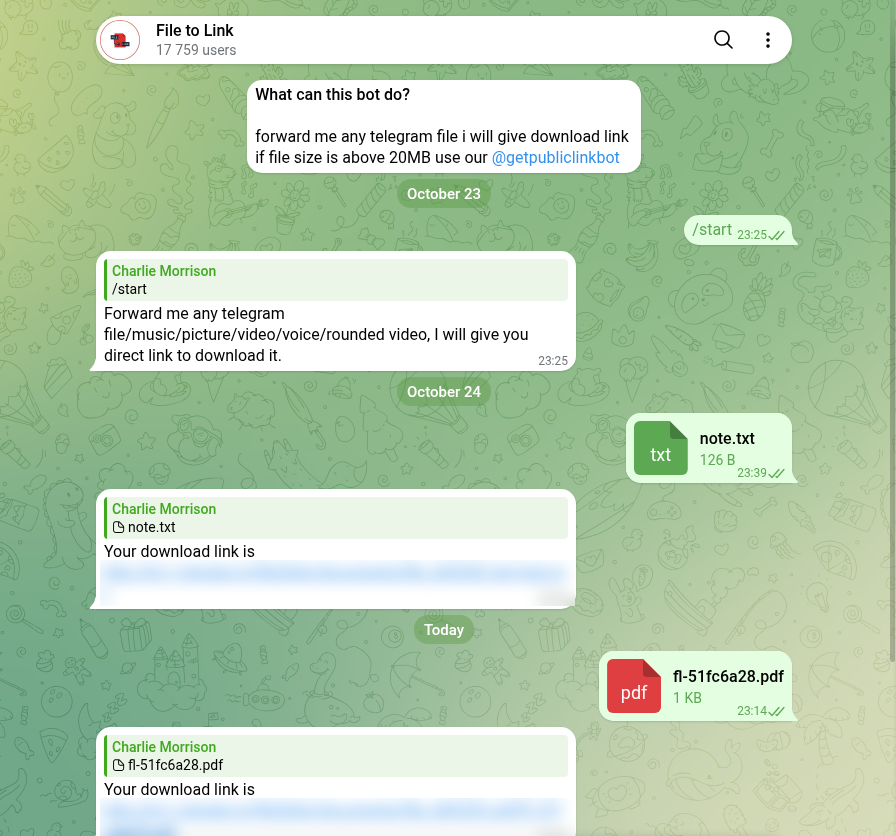

Telegram File to Link Bots: 49 Tested, 2 Gave Me the File
Search Telegram for "file to link" and you get dozens of bots that promise the same thing: send a file, get back a web link anyone can download it from. In November 2026 I found 65 of them, messaged the 40 that looked like the real thing, and sent 49 bots one small PDF of my own.
Four sent a link back. Only two of those links returned my exact file to a plain download, and both still worked a day later. 28 bots never replied to the file at all, including the three that made the biggest promises ("up to 4 GB", "permanent", "always available"). One bot turned my PDF into a picture and put it on a public image host. Here is what each one did, and the one I'd actually use.
How I tested
- Corpus. 14 searches in Telegram's own search box, the way a new user would look: eleven in English (
file to link,file to link bot,file stream,file stream bot,direct link,direct link generator,file to url,download link,file store,file sharing,upload file) and three in Russian and Ukrainian. 65 bots came back. The three non-English searches returned nothing, which surprised me, because many of these bots answer in Russian first. - Out before the first message. 13, by their own description: seven that do the reverse job (paste a link, get the file, which is what download bots are for), five that are really content channels or something else entirely, and one whose description starts with "[Dead]".
- One correction to my own method. Twelve of the bots search showed me were bots this account had already used in an October test of converter bots. A new user sees them in the ordinary results, so they stayed in as a separate, labelled group, and their
/startanswers from October are not counted again. - The file. A one-page PDF of about 1 KB with three lines on it and an 8-character ID unique to each bot, so every copy can be told apart. Nothing private in it.
- The link test. A pass meant a link to my file came back in the chat within two minutes. Then I fetched every link with
curl: no cookies, plain redirects only, never opened, and compared the bytes with my original. Ad pages were recorded, never clicked through. - Limits. Only what each bot says about itself. I did not test big files.
- The next day. Every link fetched again 24 hours later, every unprompted message counted, then
/stop. - Boundaries. One
/start, at most one tap on the bot's own first offer (a language picker or a "convert file to link" button). No channel joined, no Telegram login, no ad buttons, nothing paid.
What /start gets you
I sent /start to the 40 new bots just after midnight on 8 November 2026 and re-read the silent chats eleven minutes later.
- 18 never answered, and none answered late. This group holds the best promises on the list: @File_streamx_bot says "up to 4 GB, permanent, no ads", @TGhost_bot says files "are not deleted and will always be available", @filestolinkbot calls itself "a mirror of Telegram's servers". All three stayed silent from start to finish.
- 5 put a channel wall up first: join our channel, then come back. Several write it in the same stylised small-caps font, and one blames "server overload".
- 4 are file stores for their own admins. "If you're an admin, send me a file." A visitor can only open files someone else already posted. Three of these four carry the biggest monthly-user counts in the whole set, 54,000 to 82,000.
- 1 locks every command behind an ad ("Ad Required", watch an ad to unlock). I didn't watch it.
- 3 turned out to be something else: a movie search, a bot that turns links into files, and a constructor that posts into channels.
- 9 offered what search promised: a link for your file.
So 9 of 40 got past /start with a plausible offer. Nearly half never said a word.
Sending the file
On the evening of 8 November I sent the PDF to 49 bots: the nine that offered a link, the four admin stores and the ad-locked bot (to see what they would do with a file anyway), the five walls, the 18 silent ones (the file is this bot's whole input, so silence at /start doesn't prove it ignores files), and the twelve from October.
- 28 of 49 never replied to the file. That is all 18 silent bots, all four admin stores, and six of the twelve bots that had worked fine in October. A file-to-link bot that answered a month ago is no promise it answers today.
- 8 answered with a channel wall instead of a link.
- 4 sent a link to my file, all within two seconds. Three of the four came from the October group, not from the new ones.
- The rest were near misses. One bot only takes images and one only video and audio. Two built on Manybot answered with a menu. One sent me to a different bot. The ad-locked bot stayed locked. Two more wanted one extra step, which I cover below.
One reply deserves its own line. @FilesHubZone_bot answered "Uploading to ImgBB…" and sent back a JPEG: my PDF page, rendered as a picture and published on a public image host. That is not a link to the file. And if the page had held anything private, it would now be sitting on a stranger's server.

Does the link work without Telegram?
A link only matters if someone without Telegram can open it, so I fetched each one with curl and compared what came back with my original file.
| Bot | Link back in | What the link gives | Exact file? | 24 h later |
|---|---|---|---|---|
| @photolinks_bot | 0.4 s | the PDF, served as a PDF | yes | yes |
| @file2link_bot | 0.4 s | the PDF over http://, labelled as a web page | yes | yes, on the second try |
| @PublicDirectLinkGenerator_Bot | 1.9 s | a watch page; Download fires a pop-under ad first | only behind the page | still behind the page |
| @filesto_bot | 0.4 s | a domain that doesn't exist | no | no |
- @photolinks_bot's link carries Telegram's own file ID and returned my PDF, correctly labelled. That suggests the file never leaves Telegram's servers and the bot only passes it through.
- @file2link_bot hands out an
http://link (it redirects to https), and the server labels it as a web page, but the bytes are my PDF. - @PublicDirectLinkGenerator_Bot gives you a page, not a file. Its Download button runs a pop-under ad script first and only then points at the real download address. The file behind that address is mine, byte for byte, but a link that opens an ad page is not what I was testing for.
- @filesto_bot's link was dead the moment it arrived: the domain did not resolve at all, on two public DNS servers. The same bot gave me a working link on the same domain in October, and its menu still sells "higher limits" for 99 Stars a month.
Two bots needed one more tap after the file, and I gave each of them that tap, labelled as extra rather than a pass. @xfilelinkbot then produced three mirror links within two seconds, all three serving the exact file, and said they are "valid for 2–4 hours". @file_telegram_sharing_bot asked for a password ("-" for none) and answered with a link back into the bot, which only works inside Telegram.
A day later
Twenty-four hours after the first send I fetched every link again, the same way.
- @photolinks_bot: still the exact file, first try.
- @file2link_bot: still the exact file, on the second try. The first fetch hung for a full minute and got nothing. Two more tries a few minutes later both returned my PDF byte for byte, and the site's front page was up. If a link from it times out, try again before you give up on it.
- @PublicDirectLinkGenerator_Bot: the file is still there, behind the same ad page. My own script first reported it gone. It had fetched the site's favicon, which happens to live under the same
/dl/path, and I only noticed because the "file" came back as an icon. - @xfilelinkbot: all three mirrors returned 404, as the bot said they would.
- @filesto_bot: the domain still doesn't exist.
And the picture on ImgBB? Still public a day later, same size as the night before. The bot never gave me a delete link. In ImgBB's upload API the delete link goes back to whoever uploaded the image, and here that was the bot, not me.
Did they message me afterwards?
Some bots treat your /start as a subscription, so I read every chat after a day or more of silence on my side.
2 of 49 sent something I hadn't asked for, one message each:
- @File2Linkibot, one of the channel-wall bots, sent a festival "premium offer": three price tiers, a payment ID, and a request to send a screenshot of the payment to a support account.
- @UnlimitedFileShareBot, the one that locks every command behind an ad, sent a link to adult videos. All I had ever sent it was
/startand a one-page PDF.
That's about the same low rate as the temp mail bots I tested a week earlier (3 of 65). But the second message is exactly why I wouldn't send these bots anything personal, or use them from a shared work account.
Afterwards I sent /stop to all 52 bots I had written to, and /off to the three built on Manybot, which subscribe you to a broadcast list when you press /start. Two of the three confirmed ("Your subscription is paused"). Forty of the 52 said nothing at all. The working bots answered /stop with their usual "send me a file", one channel wall put itself up again, the ad-locked bot asked me to watch an ad, and two of the admin file stores treated /stop as a search and proudly found "Top 15 results" for it. Nobody else said it had stopped anything.
What the bots say about limits
- @file2link_bot: files over 20 MB go to a second bot, @getpubliclinkbot.
- @PublicDirectLinkGenerator_Bot: links are "permanent"; it runs on "ads or subscription".
- @xfilelinkbot: links are "valid for 2–4 hours".
- @filesto_bot: "higher limits" for 99 Stars per 30 days.
- @AnimeTorrent_bot, a link generator despite the name: "links expire in about 1 day". It never sent me one.
The 20 MB figure is not random. Telegram's Bot API documentation for getFile says bots on Telegram's own servers "can download files of up to 20MB in size", and that the download link it returns is guaranteed for "at least 1 hour". That link also contains the bot's secret token, so no bot can simply forward it to you: every bot that worked here runs its own server in the middle. The size cap only goes away on a self-hosted Bot API server, which can "download files without a size limit". A bot that promises 4 GB is telling you it runs one. Whether it is still running is another question: the one that promised 4 GB never answered.
Which one to use
For a file you don't mind being public: @photolinks_bot. It answered in under half a second, the link downloaded as a proper PDF with no page in between, and it still worked the next day.
@file2link_bot is the runner-up, and by far the more popular, with about 18,000 monthly users on Telegram's own counter. Same exact file, also still there after a day. Two things to know: the link starts with http://, and one of my four fetches timed out.
@PublicDirectLinkGenerator_Bot keeps your file, but anyone you send the link to lands on a page whose Download button fires a pop-under ad first. I wouldn't send that to a client.
Skip any bot that asks you to join channels before it does anything. Eight did that when the file arrived, and none of them gave me a link.
And the bigger lesson from 49 PDFs: send a test file first. 28 of the 49 bots never answered at all, including six that worked for me a month earlier. A bot that shows up in search is not necessarily a bot that's running.
Questions
Is it safe to put a private file through a file-to-link bot?
No. The link is public: anyone who has it can download the file, without Telegram and without logging in. One bot I tested went further and republished my PDF page as a picture on a public image host, with no way for me to delete it. Use these bots only for files you would be fine posting openly.
Why didn't the file-to-link bot answer my file?
Most likely nothing is running behind it. 28 of the 49 bots I sent a PDF to in November 2026 never replied, including six that worked when I tested them a month earlier. Telegram's search lists a bot whether or not anything is still running behind it. Send a small test file before you send the real one.
How long do file-to-link links last?
It depends on the bot, and what the bot says is not always what happens. Two links still served my exact file 24 hours later (@photolinks_bot and @file2link_bot). @xfilelinkbot says its links last two to four hours, and all three of its mirrors were gone by the next day. One bot's link pointed at a domain that no longer existed when the link arrived.
Can a Telegram bot make a link for a file bigger than 20 MB?
Only if it runs its own copy of Telegram's bot server. On Telegram's standard servers a bot can download files up to 20 MB. @file2link_bot passes bigger files to a second bot. The bots that promised gigabytes never answered my 1 KB file.
Do I have to join a channel to use one?
Not with the two that worked. Eight of the 49 answered my file with "join our channel first" instead, and I didn't join any of them.
A Telegram bot that asks for nothing
The free Party Game runs Truth or Dare, Never Have I Ever and Would You Rather as a Mini App inside Telegram, in English or Ukrainian. No channel to join, no ad to watch, no file to upload.
Open the Party Game Want the opposite job, a file from a link? See the download bots I tested.